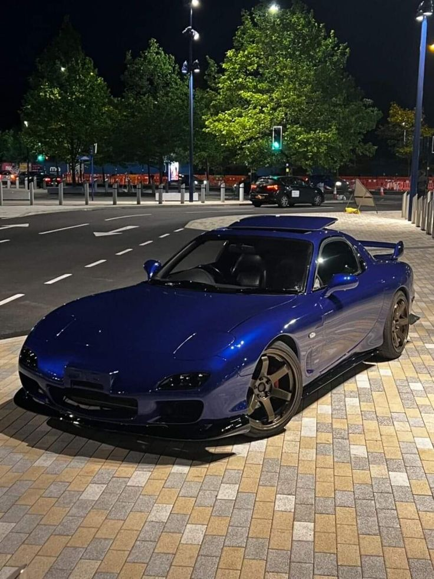
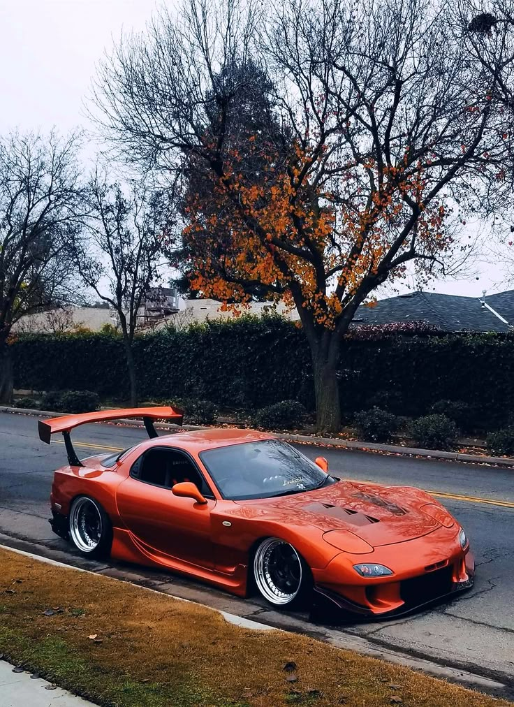
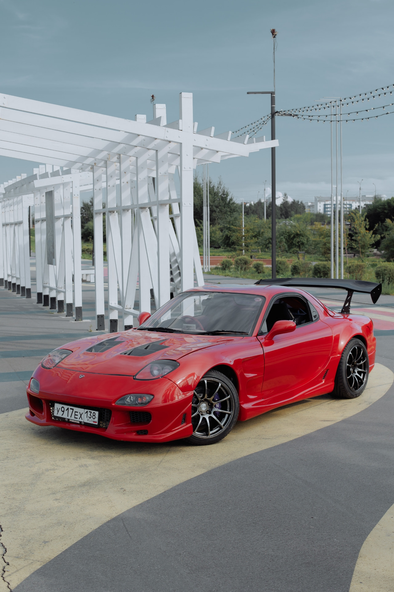

Философия: Чистый водительский автомобиль
Представленная в 1991 году Mazda RX-7 третьего поколения (кузов
FD) стала воплощением философии
«Jinba Ittai» («единство всадника и коня»), но выведенной на принципиально новый уровень. Это был не просто спортивный автомобиль — это был манифест инженерного идеализма. Главной целью было создание идеально сбалансированного, легкого и отзывчивого купе, где каждая деталь работала на достижение гармонии между машиной и водителем. FD стал ответом на японскую «гонку лошадиных сил», доказывая, что для истинного драйва важнее не мощность, а чистота ощущений и управляемость.
Дизайн: Икона 1990-х
Дизайн, созданный в калифорнийской студии Mazda (Mazda Design America) под руководством Ву-Хунга Чанга, стал сенсацией и остается эталоном спорткупе по сей день.
- Плавные, стремительные линии, лишенные острых углов. Силуэт строился вокруг концепции «аэродинамического треугольника».
- Характерные "поперечные прямоугольные фары", убирающиеся поворотом вокруг центральной оси — один из самых узнаваемых элементов.
- Кузов был невероятно легким и жестким благодаря широкому применению "стали с высоким пределом текучести и алюминиевых панелей" (капот, люк).
- Коэффициент аэродинамического сопротивления составлял всего Cx=0.31.
Конструкция: Минимизация веса
Инженеры фанатично боролись за каждый килограмм:
- Компактный роторный двигатель располагался "за передней осью", что давало распределение веса близкое к идеальному 50:50.
- Передняя подвеска — стойки типа Double Wishbone. Задняя — сложная многорычажная схема с системой Dynamic Tracking Suspension System (DTSS) и Auto Adjusting Suspension (AAS), которая меняла развал задних колес в повороте для повышения стабильности.
- Полная масса автомобиля в базе составляла всего "~1250 кг".


Двигатель 13B-REW: Секвентальный твин-турбо
Сердцем FD стал самый сложный и технологичный серийный роторный двигатель в истории — 13B-REW.
- Главной инновацией стала "система секвентального Twin Turbo (Hitachi HT12)". Одна маленькая турбина (первичная) работала на низких оборотах (до 4500 об/мин), обеспечивая эластичность. Вторая, большая (вторичная), подключалась на высоких оборотах, давая мощный подхват. Переключение между турбинами управлялось сложной электроникой и вакуумными актуаторами.
- Мощность варьировалась от "255 до 280 л.с." (в зависимости от рынка и года), но реальная отдача была гораздо выше за счет нелинейной, взрывной характера подачи мощности. Крутящий момент, хоть и не рекордный по цифрам, был невероятно эффективен благодаря минимальным механическим потерям и стремительному набору оборотов.
- Красная зона — "8000 об/мин", а характерный высокочастотный вой и свист турбин стали визитной карточкой. Двигатель требовал виртуозного обращения: для долгой жизни ему были критически важны качественное масло, своевременная замена свечей зажигания и абсолютно исправная система охлаждения.
Эволюция и рестайлинги: Поиск совершенства
За время производства FD пережил два крупных обновления, каждое из которых было направлено на устранение слабых мест и усиление характера:
- Series 1 (1991-1993): Классический, самый легкий и «чистый» вариант. Часто ценятся выше коллекционерами за первоначальный замысел, но имеют «детские болезни» ранних выпусков: уязвимую систему охлаждения турбин и менее надежные синхронизаторы КПП.
- Series 2 (1993-1995, рестайлинг): Ответ на критику. Улучшенная система охлаждения масла и турбокомпрессоров, более прочные синхронизаторы КПП, слегка измененный дизайн задних фонарей и переднего бампера с дополнительными воздухозаборниками.
- Series 3 (1995-1996, рестайлинг для Японии; 1996-1998 для США; до 2002 в Японии): Самая серьезная и окончательная доработка. Новый, более агрессивный передний бампер, 16-дюймовые легкосплавные диски (вместо 15-дюймовых), улучшенный салон с пассажирской подушкой безопасности. Японские версии Spirit R (Type R) и Type RS стали вершиной эволюции — с облегченным кузовом (алюминиевые двери, стеклопластиковый капот), винтовой подвеской Bilstein, коваными дисками BBS, доработанной турбо-системой и карбоновым селектором КПП. Это был итог десятилетнего развития — самый быстрый, технологичный и собранный FD.
Трансмиссия и шасси: Хирургическая точность
- Коробка передач — 5-ступенчатая «механика» (для версий высокой мощности) с короткоходным, точным селектором. Она идеально дополняла высокооборотный характер мотора, требуя активной работы.
- Привод — исключительно задний (FR). Ограниченный скольжения дифференциал (LSD) типа Torsen входил в стандартную комплектацию спортивных версий, обеспечивая идеальную тягу при выходе из поворота.
- Шасси постоянно дорабатывалось, становясь жестче и отзывчивее. Версии Type R / RS / Spirit R имели дополнительное усиление кузова сварными точками и облегченные компоненты. Управляемость FD была её главным козырем — машина не просто входила в поворот, а «ныряла» в него с нейтральной поворачиваемостью и абсолютной предсказуемостью, задавая новые стандарты для фронтальных спортивных купе.
Культовый статус: Графический символ эпохи
Mazda RX-7 FD достигла статуса иконы поп-культуры, став одним из самых узнаваемых и желаемых японских автомобилей в истории. Она стала звездой франшизы «Форсаж» (машина Доменика Торетто в первой части), культовых видеоигр (Gran Turismo, Need for Speed, Initial D) и эталоном дизайна 1990-х. Её ценили гонщики за идеальный баланс и управляемость, ставившую в тупик более мощных конкурентов на извилистых трассах, а эстеты — за безупречную, скульптурную красоту линий, не стареющую и сегодня. Это был последний роторный спорткар, созданный без оглядки на экологию и стоимость, в период наивысшего расцвета японского автопрома, символ его технологической смелости и преданности уникальным идеям.
Реальность владения: Высокая цена гениальности и «роторный» образ жизни
Владение FD — это не просто владение автомобилем. Это принятие целой философии и образа жизни, построенного вокруг постоянного ухода, диагностики и глубокого понимания механики. Автомобиль требует от владельца не только денег, но и глубоких инженерных знаний, финансовой подушки и фанатичной преданности. Сообщество владельцев RX-7 — это закрытый клуб энтузиастов, где главные ценности — это опыт, взаимопомощь и знание «своих» мастеров.
Критические «болевые точки» и вызовы:
- Низкая надежность и ресурс двигателя: Капитальный ремонт ротора (замена апексов, уплотнений, часто самого статора) — это не вопрос «если», а вопрос «когда». Средний ресурс до капремонта составляет "80-120 тыс. км". Стоимость профессионального ремонта у специалиста сопоставима со стоимостью самого подержанного автомобиля, а непрофессиональный ремонт гарантирует повторную разборку через несколько тысяч километров.
- Сложность и капризность системы Twin Turbo: Лабиринт вакуумных шлангов, соленоидов, актуаторов и клапанов — источник постоянных проблем. Турбины чувствительны к перегреву и качеству масла. Многие владельцы в итоге переходят на более простую и надежную схему с одним большим турбокомпрессором (single turbo conversion), жертвуя частью оригинальной эластичности ради жизнеспособности.
- Высокий расход и специфичное обслуживание: Расход масла — не неисправность, а "конструктивная особенность". Мотор сжигает небольшое количество масла для смазки уплотнений роторов. Необходимо постоянно контролировать уровень, используя только специальное масло без моющих присадок. "Ритуалы прогрева до рабочих температур и обязательного остуживания на холостых оборотах после активной езды" — священны для продления жизни двигателя.
- Проблемы с катализатором и выхлопом: Катализатор в стандартной системе часто забивается продуктами сгорания масла, что ведет к потере мощности и перегреву. Его удаление и установка спортивного выхлопа — одна из первых процедур у владельцев.
Что искать и стоит ли оно того? Итог для смельчака
Идеальный FD сегодня — это:
-
Максимально оригинальный автомобиль с документированной историей обслуживания и минимальным количеством владельцев.
-
Импорт из сухого климата (Япония, Калифорния, Австралия), максимально защищенный от коррозии.
-
Версия Series 3, и особенно Type R/RS или Spirit R, как наиболее доработанная и ценная.
-
Автомобиль, прошедший качественный капремонт двигателя у известного, проверенного сообществом специалиста с гарантией и всеми чеками.
Заключение: Последний самурай. Красота, требующая жертв
Mazda RX-7 FD — это одновременно шедевр и проклятие, вершина инженерной мысли, обернутая в один из самых красивых кузовов в истории, но наделенная «характером» не для слабонервных. Это не автомобиль для ежедневной езды или первого спортивного опыта. Это проект всей жизни, объект для инвестиций и поклонения, машина-учитель. Она научит вас терпению, механике, финансовому планированию и смирению. Но в награду за все хлопоты она подарит несколько секунд абсолютной нирваны на высоких оборотах, когда мир сужается до лобового стекла, воя ротора, идеальной гармонии между человеком и машиной и осознания, что вы управляете одним из последних по-настоящему аналоговых и бескомпромиссных суперкаров в истории. Покупая FD, вы покупаете не транспорт, а билет в легенду — самую красивую, самую сложную и самую эмоциональную главу в саге о роторном двигателе Ванкеля.

 89081317488
89081317488

 8(908)131-74-88
8(908)131-74-88.svg) fayther2@yandex.ru
fayther2@yandex.ru